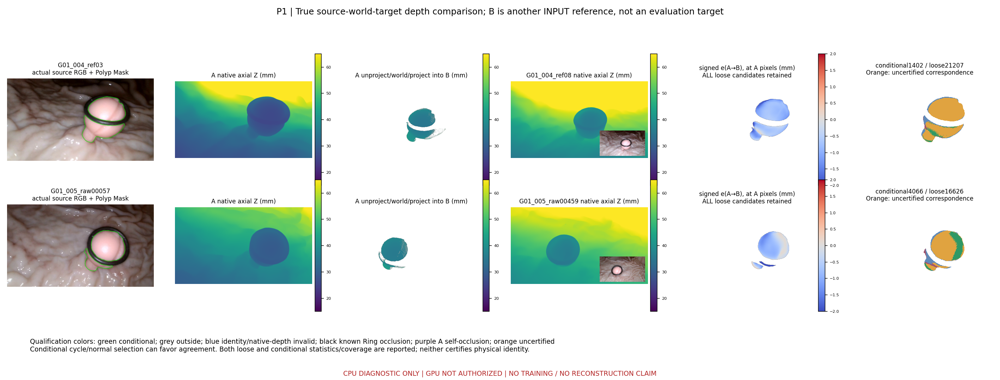
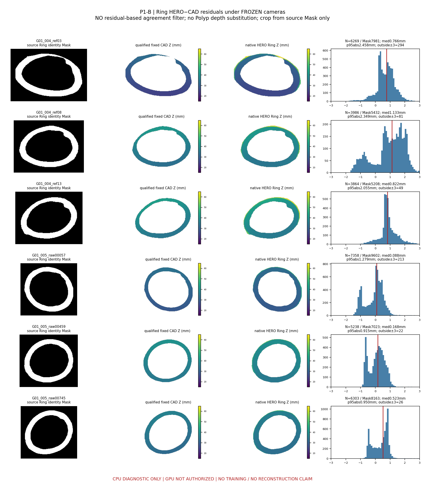
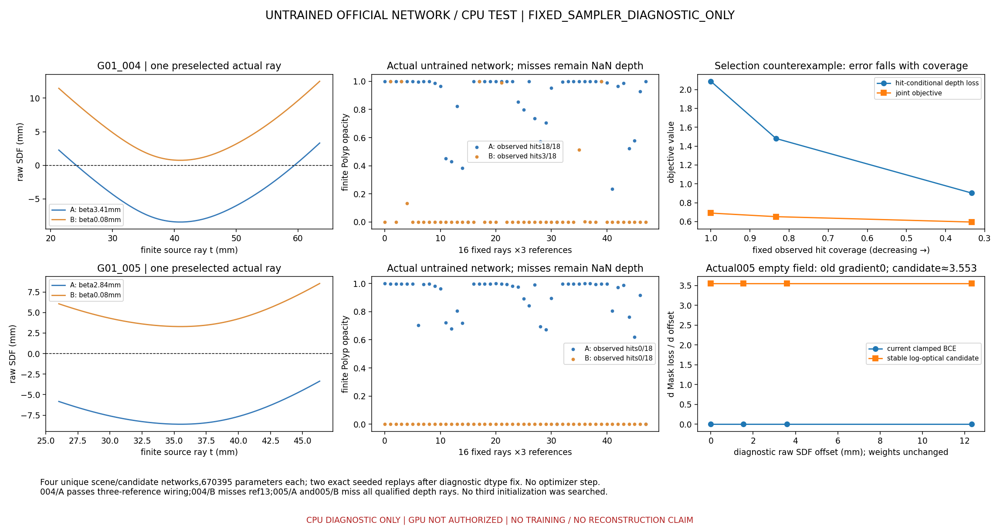
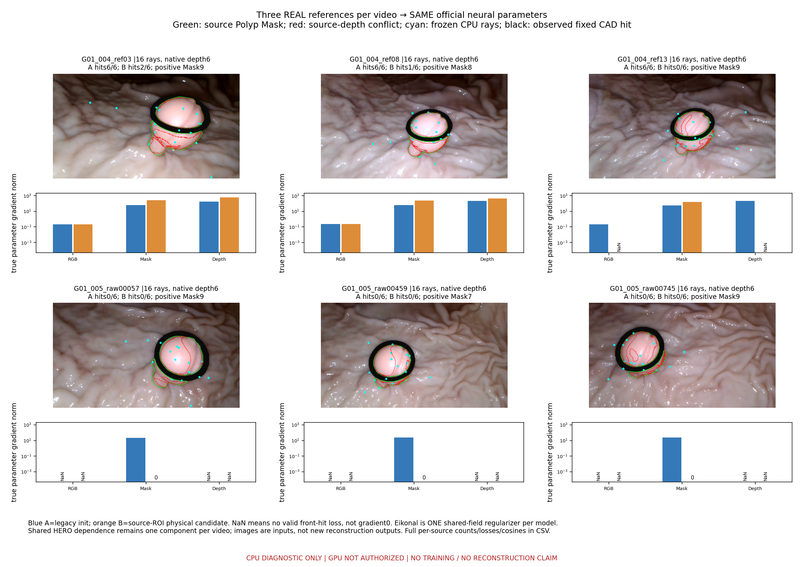

E2.5 — UNTRAINED OFFICIAL NETWORK / CPU TEST
GPU NOT AUTHORIZED; no optimizer update; neural three-reference gate failed in005.
Fig1_depth_conflicts.png

Fig2_ring_depth_residuals.png

Fig3_official_sdf_cpu.png

Fig4_three_reference_gradients.png
